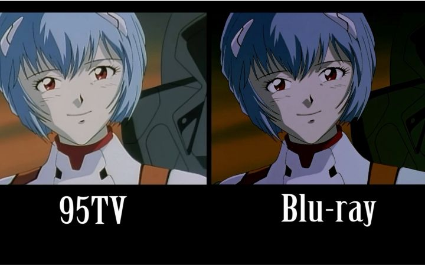
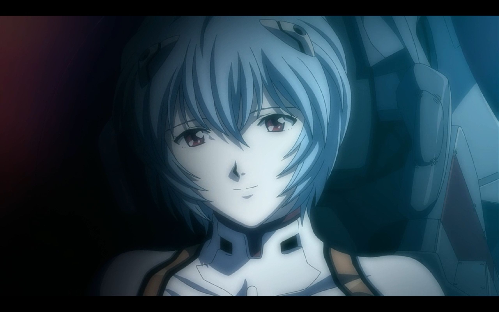

EVANGELION
TV版
- 中文名 新世纪福音战士
- 原版名称 新世紀エヴァンゲリオン
- 其他名称 NEON GENESIS EVANGELION
- 动画制作 龙之子工作室，GAINAX
- 集数 26集
- 导演 庵野秀明
- 剧本 庵野秀明
- 角色设计 贞本义行
- 音乐 鷺巣诗郎
- 主要配音 绪方惠美，三石琴乃，林原惠美，宫村优子
- 首播电视台 东京电视台
- 播放期间 1995年10月4日至1996年3月27日
- 出品人 小林教子，杉山豐
- 制片 东京电视台、NAS
- 片头曲 《残酷天使的行动纲领》
- 片尾曲 《FLY ME TO THE MOON》

旧剧场版
- 中文名 新世纪福音战士剧场版：死与新生
- 原版名称 新世紀エヴァンゲリオン劇場版 シト新生
- 其他名称 Evangelion: Death and Rebirth
- 发行公司 日本东映
- 导演 庵野秀明、摩砂雪、鶴巻和哉
- 编剧 薩川昭夫、庵野秀明
- 主要配音 绪方惠美，林原惠
- 上映时间 1997年3月15日
- 票房 18.7亿日元
- 中文名 新世纪福音战士剧场版：Air/真心为你
- 原版名称 新世紀エヴァンゲリオン劇場版 Air/まごころを、君に
- 其他名称 The End of Evangelion
- 发行公司 东映（日本）Manga Entertainment（美国）
- 导演 庵野秀明、鶴巻和哉
- 编剧 庵野秀明、鹤卷和哉、樋口真嗣
- 主要配音 绪方惠美，三石琴乃，林原惠
- 上映时间 1997年7月19日
- 票房 24.7亿日元
新剧场版
- 中文名 福音战士新剧场版：序
- 原版名称 ヱヴァンゲリヲン新劇場版：序
- 其他名称 EVANGELION:1.0 YOU ARE (NOT) ALONE
- 发行时间 2007年9月1日
- 中文名 福音战士新剧场版：破
- 原版名称 ヱヴァンゲリヲン新劇場版：破
- 其他名称 EVANGELION:2.22 YOU CAN (NOT) ADVANCE.
- 发行时间 2009年6月27日（日本）
- 中文名 福音战士新剧场版：Q
- 原版名称 ヱヴァンゲリヲン新劇場版：Q
- 其他名称 EVANGELION:3.33 YOU CAN (NOT) REDO
- 发行时间 2012年11月17日（日本）
